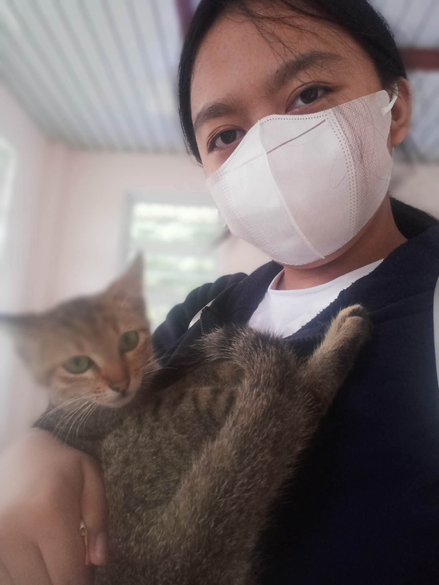
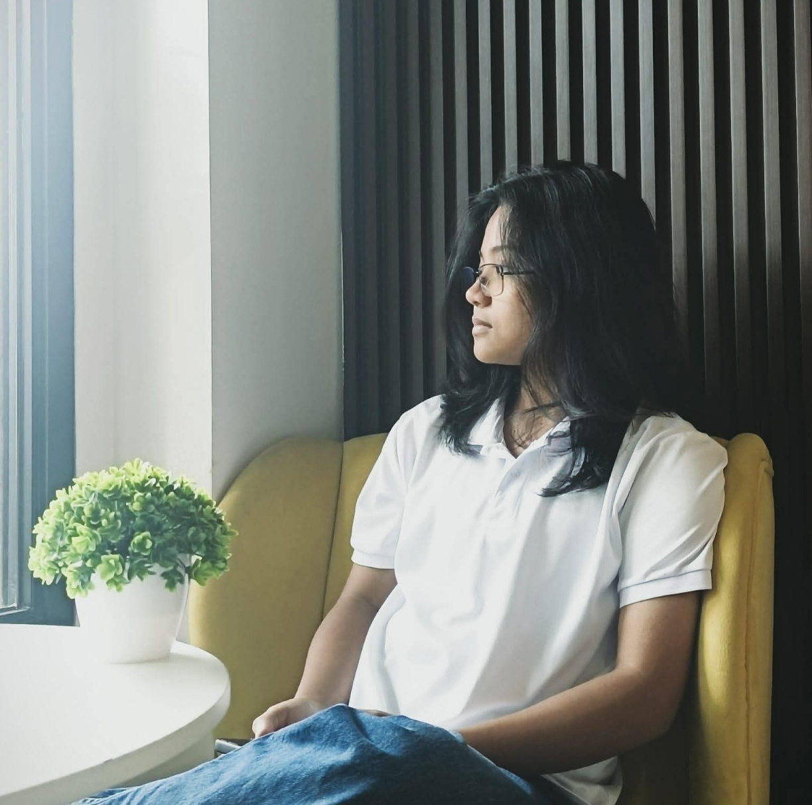

01 / ABOUT US
Get to Know Us
Two individuals, different strengths, and one shared passion for creativity and technology.

01 / PERSON ONE
Xyza Marie Bago
Student
Hello! I’m Xyza Marie Bago, a second-year Bachelor of Science in Information Technology (BSIT) student at Saint Joseph’s College of Baggao (SJCB). I graduated from Baggao National High School (BNHS) during Senior High School, where I developed an interest in technology and creativity.
As I continue my journey in Information Technology, I aim to improve my technical and creative skills, gain valuable experience, and become a skilled IT professional in the future.
Interest: Arts and Technology
Focus: Programming and Developing Websites

02 / PERSON TWO
Hazel-Anne Dilla
Student
Hello! I’m Hazel-Anne Dilla, a second-year Bachelor of Science in Information Technology (BSIT) student at Saint Joseph’s College of Baggao (SJCB). I graduated from Baggao National School of Arts and Trades (BNSAT) during Senior High School, where I developed an interest in technology and continued to pursue it in college.
I am passionate about technology, learning new skills, and playing musical instruments. I enjoy exploring different technologies and discovering how they can be used to create useful and meaningful solutions. My interest in both technology and creativity motivates me to continuously improve my skills and gain new experiences.
Interest: Music & Technology
Focus: Visual & Digital Projects